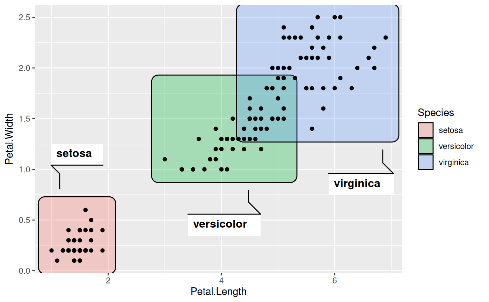
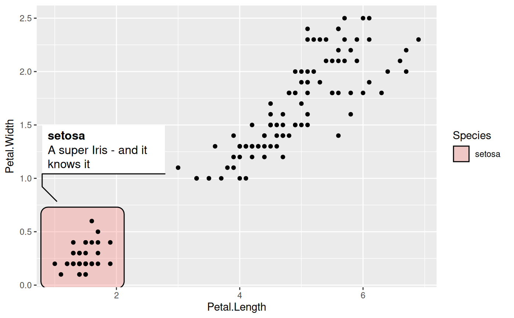

This geom lets you annotate sets of points via rectangles. The rectangles are
simply scaled to the range of the data and as with the the other
geom_mark_*() geoms expanded and have rounded corners.
geom_mark_rect(mapping = NULL, data = NULL, stat = "identity", position = "identity", expand = unit(5, "mm"), radius = unit(2.5, "mm"), label.margin = margin(2, 2, 2, 2, "mm"), label.width = NULL, label.minwidth = unit(50, "mm"), label.hjust = 0, label.fontsize = 12, label.family = "", label.lineheight = 1, label.fontface = c("bold", "plain"), label.fill = "white", label.colour = "black", label.buffer = unit(10, "mm"), con.colour = "black", con.size = 0.5, con.type = "elbow", con.linetype = 1, con.border = "one", con.cap = unit(3, "mm"), con.arrow = NULL, ..., na.rm = FALSE, show.legend = NA, inherit.aes = TRUE)
| mapping | Set of aesthetic mappings created by |
|---|---|
| data | The data to be displayed in this layer. There are three options: If A A |
| stat | The statistical transformation to use on the data for this layer, as a string. |
| position | Position adjustment, either as a string, or the result of a call to a position adjustment function. |
| expand | A numeric or unit vector of length one, specifying the expansion amount. Negative values will result in contraction instead. If the value is given as a numeric it will be understood as a proportion of the plot area width. |
| radius | As |
| label.margin | The margin around the annotation boxes, given by a call
to |
| label.width | A fixed width for the label. Set to |
| label.minwidth | The minimum width to provide for the description. If the size of the label exceeds this, the the description is allowed to fill as much as the label |
| label.hjust | The horizontal justification for the annotation. If it contains two elements the first will be used for the label and the second for the description. |
| label.fontsize | The size of the text for the annotation. If it contains two elements the first will be used for the label and the second for the description. |
| label.family | The font family used for the annotation. If it contains two elements the first will be used for the label and the second for the description. |
| label.lineheight | The height of a line as a multipler of the fontsize. If it contains two elements the first will be used for the label and the second for the description. |
| label.fontface | The font face used for the annotation. If it contains two elements the first will be used for the label and the second for the description. |
| label.fill | The fill colour for the annotation box. |
| label.colour | The text colour for the annotation. If it contains two elements the first will be used for the label and the second for the description. |
| label.buffer | The size of the region around the mark where labels cannot be placed. |
| con.colour | The colour for the line connecting the annotation to the mark |
| con.size | The width of the connector |
| con.type | The type of the connector. Either |
| con.linetype | The linetype of the connector |
| con.border | The bordertype of the connector. Either |
| con.cap | The distance before the mark that the line should stop at. |
| con.arrow | An arrow specification for the connection using
|
| ... | Other arguments passed on to |
| na.rm | If |
| show.legend | logical. Should this layer be included in the legends?
|
| inherit.aes | If |
geom_mark_rect understand the following aesthetics (required aesthetics are in bold):
x
y
filter
label
description
color
fill
group
size
linetype
alpha
All geom_mark_* allows you to put descriptive textboxes connected to the
mark on the plot, using the label and description aesthetics. The
textboxes are automatically placed close to the mark, but without obscuring
any of the datapoints in the layer. The placement is dynamic so if you resize
the plot you'll see that the annotation might move around as areas become big
enough or too small to fit the annotation. If there's not enough space for
the annotation without overlapping data it will not get drawn. In these cases
try resizing the plot, change the size of the annotation, or decrease the
buffer region around the marks.
Often marks are used to draw attention to, or annotate specific features of
the plot and it is thus not desirable to have marks around everything. While
it is possible to simply pre-filter the data used for the mark layer, the
geom_mark_* geoms also comes with a dedicated filter aesthetic that, if
set, will remove all rows where it evalutates to FALSE. There are
multiple benefits of using this instead of prefiltering. First, you don't
have to change your data source, making your code more adaptable for
exploration. Second, the data removed by the filter aesthetic is remembered
by the geom, and any annotation will take care not to overlap with the
removed data.
Other mark geoms: geom_mark_circle,
geom_mark_ellipse,
geom_mark_hull
ggplot(iris, aes(Petal.Length, Petal.Width)) + geom_mark_rect(aes(fill = Species, filter = Species != 'versicolor')) + geom_point()# Add annotation ggplot(iris, aes(Petal.Length, Petal.Width)) + geom_mark_rect(aes(fill = Species, label = Species)) + geom_point()# Long descriptions are automatically wrapped to fit into the width iris$desc <- c( 'A super Iris - and it knows it', 'Pretty mediocre Iris, but give it a couple of years and it might surprise you', "You'll never guess what this Iris does every Sunday" )[iris$Species] ggplot(iris, aes(Petal.Length, Petal.Width)) + geom_mark_rect(aes(fill = Species, label = Species, description = desc, filter = Species == 'setosa')) + geom_point()# Change the buffer size to move labels farther away (or closer) from the # marks ggplot(iris, aes(Petal.Length, Petal.Width)) + geom_mark_rect(aes(fill = Species, label = Species), label.buffer = unit(30, 'mm')) + geom_point()# The connector is capped a bit before it reaches the mark, but this can be # controlled ggplot(iris, aes(Petal.Length, Petal.Width)) + geom_mark_rect(aes(fill = Species, label = Species), con.cap = 0) + geom_point()